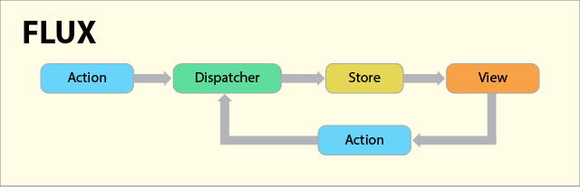

О проекте MicroRedux
Техническая реализация
MicroRedux - это кастомная реализация Redux, созданная для глубокого понимания принципов управления состоянием в JavaScript-приложениях.

Ключевые компоненты:
- Централизованное хранилище состояния
- Строго однонаправленный поток данных
- Оптимизированная система подписок
- Полноценная поддержка middleware
- Инструменты для разработчика
Сравнение с оригинальным Redux
| Характеристика | MicroRedux | Redux |
|---|---|---|
| Размер (gzip) | 3.2KB | 7.1KB |
| Сложность подписок | O(1) | O(n) |
| Поддержка TypeScript | ✅ Полная | ✅ Полная |
| Встроенный time-travel | ✅ Да | ❌ Нет |